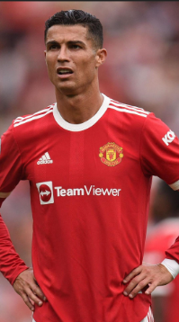

Return to Manchester United
In 2021, Cristiano Ronaldo made a highly anticipated return to Manchester United, the club where his career began at the highest level. This return stirred immense emotion among fans worldwide. Despite the challenges, CR7 demonstrated that he remained an exceptional player with decisive performances and impressive leadership.